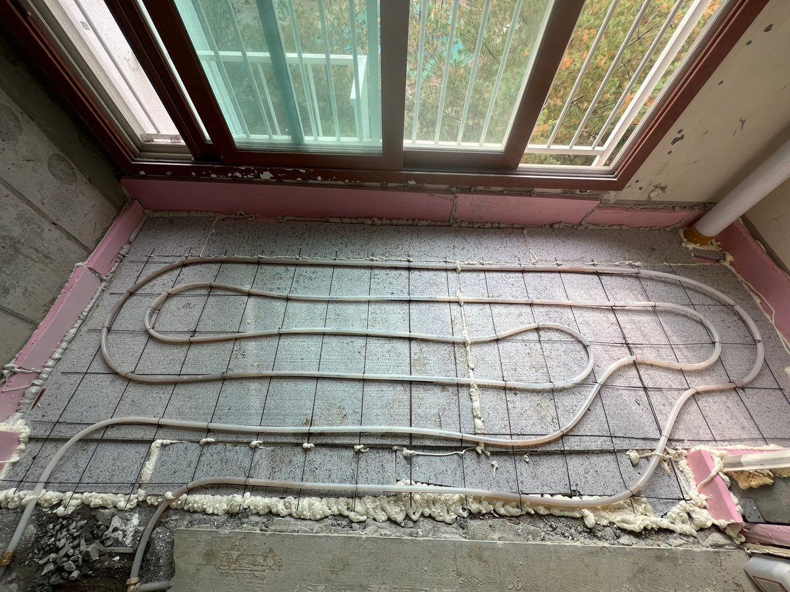
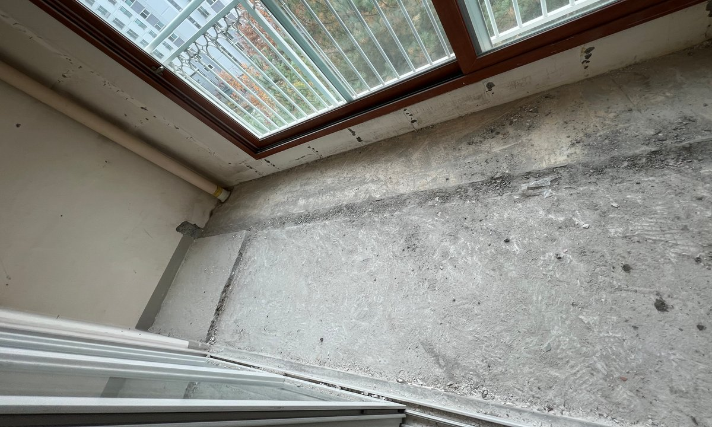
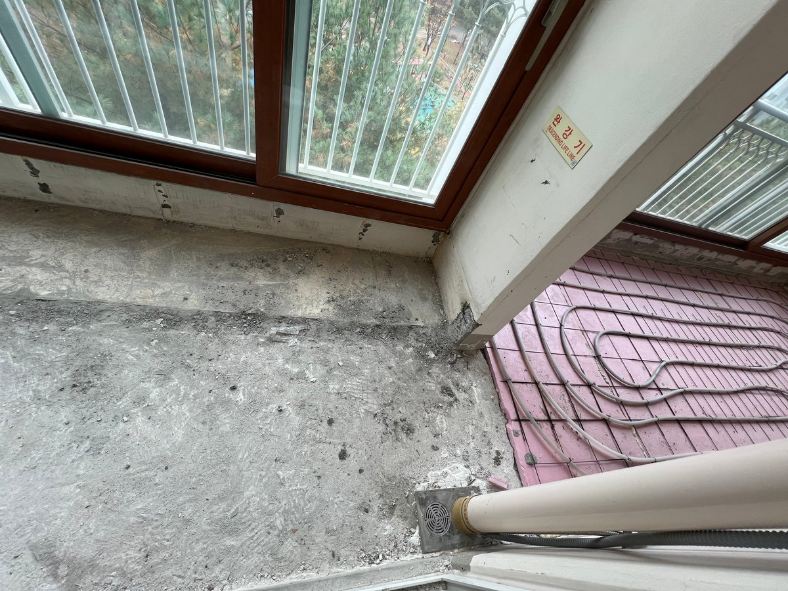
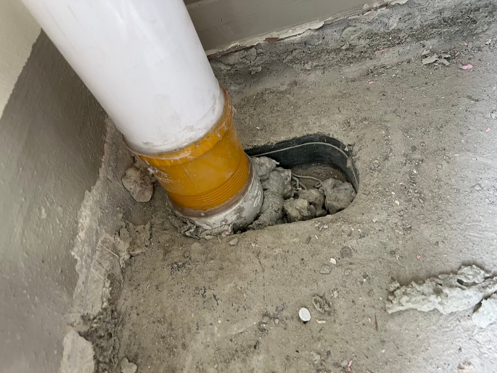
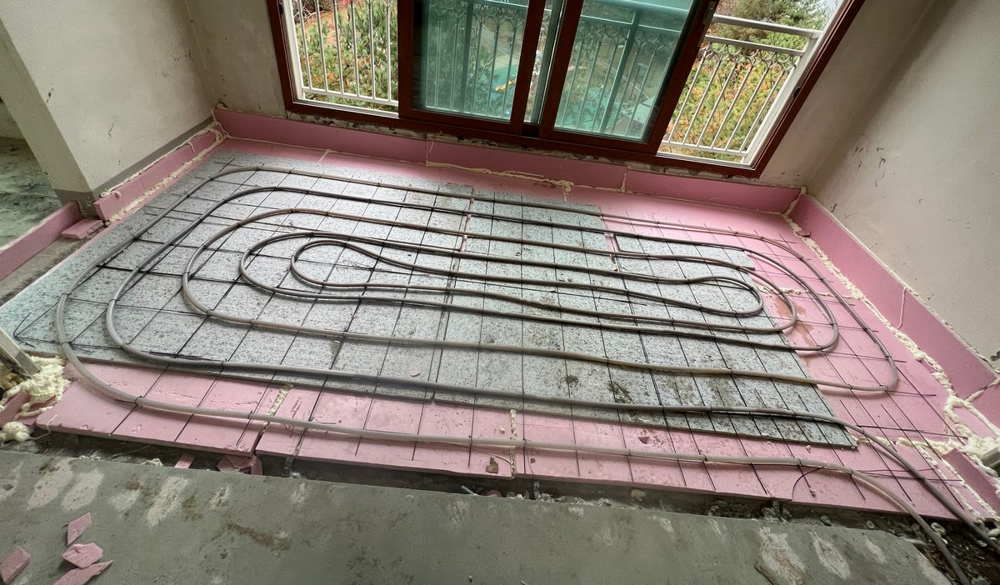
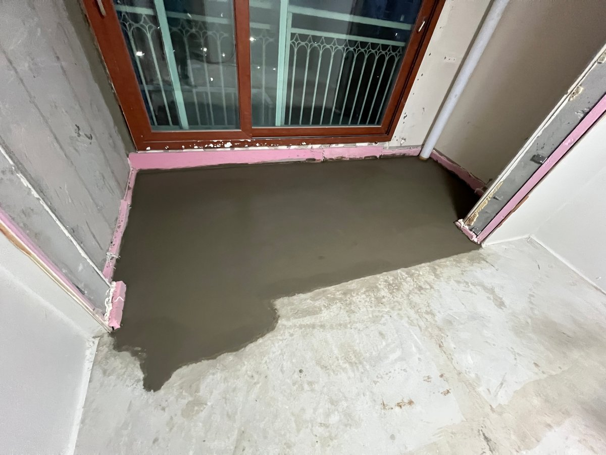
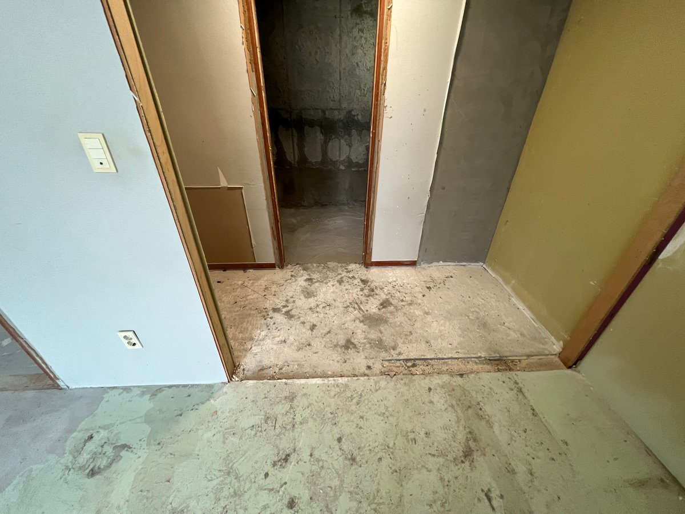
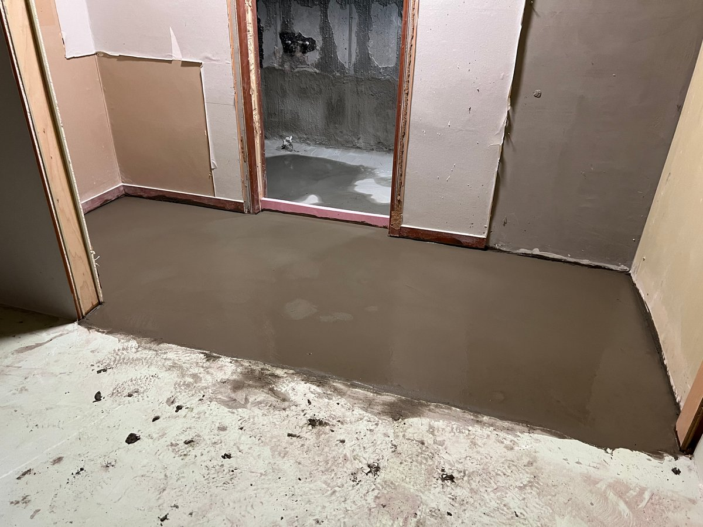
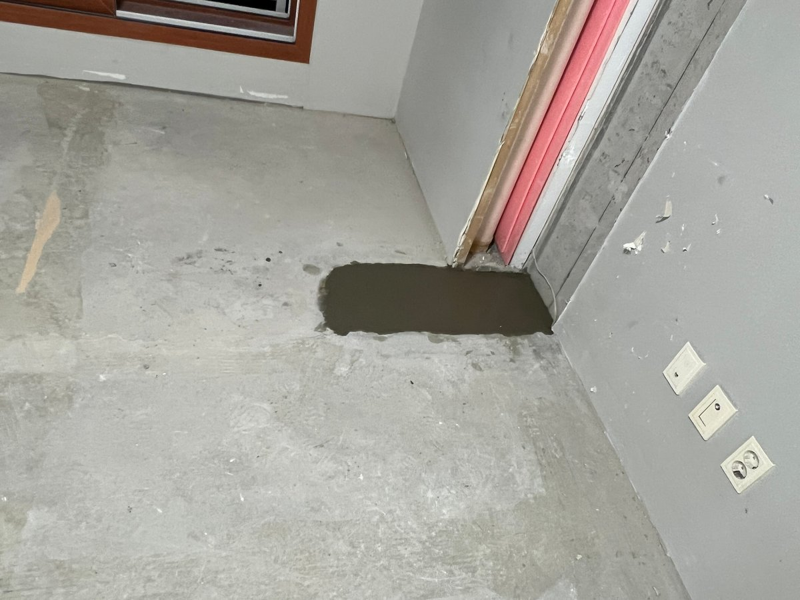

대전 유성구 관평동 하이츠빌아파트 확장부 난방 배관·미장｜철거한 창가 바닥에 단열재와 배관을 깔고 미장으로 덮기

현장 작업 한눈에 보기
- 현장
- 유성구 관평동 하이츠빌아파트 · 방·거실 창가 확장부 바닥
- 문제
- 창가 확장부 바닥을 걷어 낸 상태(방·거실)
방 한쪽 우수관 아래쪽 이음 부분 - 작업
- 확장부 단열재·난방 배관 설치
확장부 바닥 미장
방 우수관 1곳 작업
안방 배관 마개(메꾸라) 교체
문 앞·문틀 옆 바닥 부분 미장 - 결과
- 미장을 마친 확장부·문 앞 바닥 사진 확인
남은 작업은 다음 방문 때 진행 · 시험 결과·소요시간은 미기재
대전 유성구 관평동 하이츠빌아파트 한 세대의 방·거실 창가 확장부 바닥 작업입니다. 확장부 바닥을 걷어 낸 자리에 단열재와 난방 배관을 깔고 미장으로 덮었고, 방 우수관 1곳 작업과 문 앞 바닥 부분 미장도 함께 했습니다. 베란다 확장부 난방 배관과 단열을 알아볼 때 볼 점도 함께 정리했습니다. 실제 사진 9장으로 소개합니다.
1. 철거한 창가 확장부
대전 유성구 관평동 하이츠빌아파트 한 세대에서 방과 거실의 창가 확장부 바닥을 다시 까는 작업을 했습니다. 2026년 11월 18일에 찍은 사진을 순서대로 소개합니다.
창가 확장부의 바닥을 걷어 내 콘크리트 바탕이 드러난 모습입니다. 창틀 아래 벽 쪽까지 바탕만 남아 있어, 이 위에 단열재부터 차례로 새로 깔게 됩니다.

2. 단열재와 난방 배관 깔기
철거한 확장부 옆 칸부터 분홍색 단열재를 깔고, 그 위에 난방 배관을 돌려 깔기 시작했습니다. 왼쪽은 바닥을 걷어 낸 자리, 오른쪽은 단열재와 배관을 깐 자리입니다.
확장부는 바탕 위에 단열재를 먼저 깔고 그 위에 배관을 올리는 순서로 진행했습니다. 단열재를 먼저 까는 것은 배관의 열이 아래 콘크리트 쪽으로 빠져나가는 것을 줄이기 위한 일반적인 순서입니다.

3. 방 우수관 1곳
방 한쪽 모서리의 우수관입니다. 우수관이 바닥으로 들어가는 자리를 열어 아래쪽 이음 부분을 드러냈습니다. 이날 방 우수관 1곳을 작업했습니다.
사진 순서대로, 이 자리는 확장부 미장보다 먼저 열어 작업했습니다. 바닥을 미장으로 덮고 나면 우수관이 바닥으로 들어가는 자리를 다시 열기 어렵기 때문입니다.

4. 우수관이 있는 방 확장부 난방 배관
우수관이 있는 방의 창가 확장부입니다. 오른쪽 흰 관이 우수관입니다. 단열재를 깔고 철망 위에 난방 배관을 고르게 돌려 깔았습니다.
벽과 창틀 아래 가장자리에도 분홍색 단열재를 세워 대고, 단열재가 만나는 틈은 폼으로 메웠습니다. 가장자리와 틈을 막아 두는 것은 바닥의 열이 벽과 창 쪽으로 새는 길을 줄이기 위해서입니다.
5. 다른 확장부 난방 배관
다른 창가 확장부에도 단열재 위에 난방 배관을 깔았습니다. 배관이 겹치지 않게 간격을 두고 돌려 놓은 모습입니다. 이 확장부도 벽을 따라 가장자리에 단열재를 대고, 그 안쪽에 철망을 깐 뒤 배관을 올렸습니다.

6. 확장부 바닥 미장
4번 사진의 확장부를 미장으로 덮은 모습입니다. 깔아 둔 난방 배관이 미장 속에 묻혔습니다. 방 안쪽 기존 바닥과 만나는 데까지 미장을 펴 발랐고, 갓 바른 상태라 미장 면이 짙은 색으로 보입니다.

7. 문 앞 바닥 — 작업 전
확장부 말고도 문 앞 바닥을 손봤습니다. 작업 전 문 앞 바닥 모습입니다. 문 앞 한 칸이 그 앞 바닥과 경계가 져 있고, 면이 거친 상태였습니다.

8. 문 앞 바닥 — 미장 후
7번 사진의 문 앞 바닥을 미장으로 메워 고른 모습입니다. 문틀 아래부터 앞쪽 바닥과 만나는 데까지 한 면으로 이어 발랐습니다.

9. 문틀 옆 바닥 부분 미장
문틀 옆 바닥 한 곳도 미장으로 메웠습니다. 넓지 않은 자리지만, 바닥 바탕에 패이거나 빈 자리가 남지 않도록 함께 메운 것입니다.

10. 알아 두면 좋은 점 — 확장부 난방 배관과 바닥 미장
아래는 이 현장에서 확인한 내용이 아니라, 확장부 바닥 공사를 알아보는 분들이 자주 궁금해하는 점을 일반적으로 정리한 것입니다. 실제 범위는 집 구조와 현장 상태에 따라 달라집니다.
베란다를 확장한 자리는 원래 난방 배관이 깔려 있지 않던 곳인 경우가 많습니다. 그래서 베란다 확장부를 방처럼 쓰려면 단열재를 깔고 난방 배관을 새로 놓아 기존 난방과 이어 주는 공사를 하는 것이 일반적입니다.
확장부 바닥은 보통 바탕 정리, 단열재, 난방 배관, 미장, 바닥 마감재 순서로 올라갑니다. 단열재와 배관은 미장으로 덮으면 보이지 않으므로, 덮기 전 모습을 사진으로 남겨 두면 나중에 확인하기 좋습니다.
미장은 겉이 말라 보여도 속까지 마르는 데 시간이 걸립니다. 마르는 기간은 두께와 계절, 환기 상태에 따라 달라서, 충분히 마른 것을 확인한 뒤 바닥재를 까는 것이 일반적입니다.
확장부 바닥 공사는 기존 바닥과의 높이, 난방 배관을 잇는 자리, 우수관이나 배수구가 지나는지에 따라 범위가 달라집니다. 비용도 범위와 자재, 현장 상태에 따라 달라지므로 사진과 함께 상담해 주시면 안내합니다.
11. 함께 한 일과 확인한 범위
이날은 안방 배관 끝 마개(메꾸라) 교체도 함께 했습니다. 이 부분은 사진을 고르지 않아 글로만 적습니다.
이번 기록은 작업 보고와 사진으로 확인되는 범위입니다. 난방 배관 시험 결과, 미장 두께와 마르는 기간, 작업 시간은 자료가 없어 적지 않았습니다. 남은 작업은 다음 방문 때 이어서 진행할 예정입니다.
창가 확장부 바닥이 들뜨거나 갈라진 곳이 있으면 확장부 바닥 전체와 갈라진 자리를 찍어 상담해 주세요.